招募資訊 Recruiting
近期我們正招募對 LLM 的人文社會科學應用、YouTube 社群輿論分析、知識圖譜視覺化有興趣的大學生與碩士生，無論是擔任兼任助理、撰寫大學生研究計畫、或碩士論文。我們每週定期聚會討論相關領域發展及實務技能。若有興趣，請直接寄信給謝吉隆老師。
Updated 2025/05/06
National Taiwan University · Journalism
計算傳播研究室
以資料科學、社會網絡分析、自然語言處理與社會模擬，探索新聞傳播及社會科學議題。
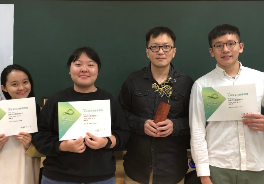
About the Lab
「計算傳播研究室」是一個致力於運用資料科學方法來探究社會科學議題的研究團隊。
團隊主持人擁有交大資訊工程博士學位，多年來一直運用計算機方法，例如社會網絡分析、社會模擬和自然語言處理等技術，來研究各種社會科學與傳播議題。我們的研究範疇包括但不限於輿情分析、流行病傳播、訊息傳播、數位外交、線上社群、意識形態極化以及刻板印象等議題。此外，我們也關注新聞傳播領域的議題，例如假訊息的認知、影響力以及新聞標題的研究。
The Computational Communication Research Lab explores social science issues through data science methods. Our work applies social network analysis, social simulation, and natural language processing to opinion analysis, information dissemination, digital diplomacy, online communities, ideological polarization, stereotypes, fake news, and news headlines.
近期我們正招募對 LLM 的人文社會科學應用、YouTube 社群輿論分析、知識圖譜視覺化有興趣的大學生與碩士生，無論是擔任兼任助理、撰寫大學生研究計畫、或碩士論文。我們每週定期聚會討論相關領域發展及實務技能。若有興趣，請直接寄信給謝吉隆老師。
Updated 2025/05/06
Activities & Achievements
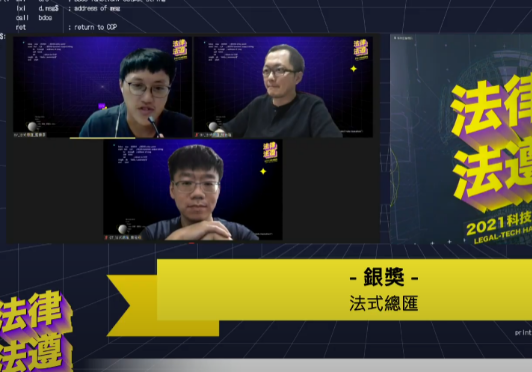
研究室第三次參與法律科技黑客松，與臺灣計算語言學團隊合作。
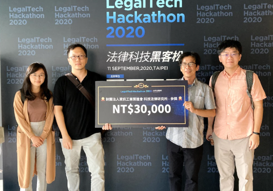
結合法律、政治科學與資訊背景，設計協助一般民眾理解法律文字的聊天機器人。
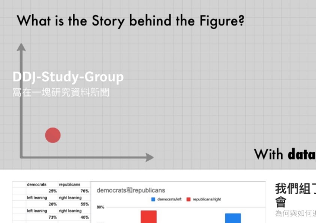
教授 R、Python、前端技術、資料視覺化與數位敘事，推動 data-driven news 與 scrollytelling。
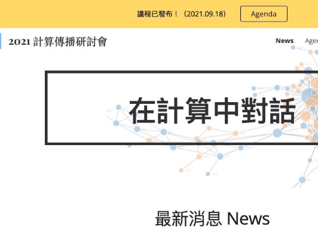
與多位關注計算方法與社會科學的學者共同舉辦 Computational Communication Conference。
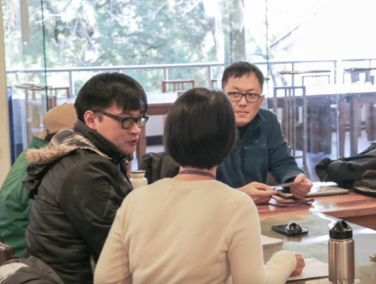
跨領域團隊討論與社會科學程式設計人才培育。
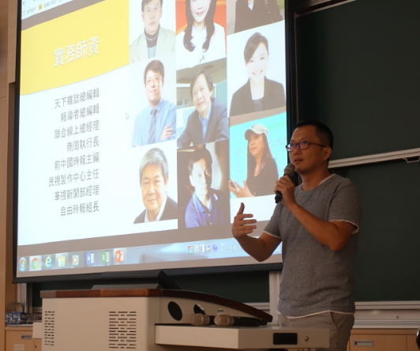
介紹新聞所的跨領域學程與資料科學教育。
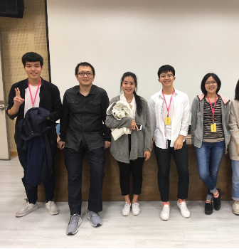
研究室成員擔任講師與助教，帶領媒體工作者認識網絡分析。
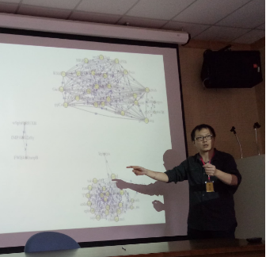
以協同行為資料介紹網絡分析概念與實作。
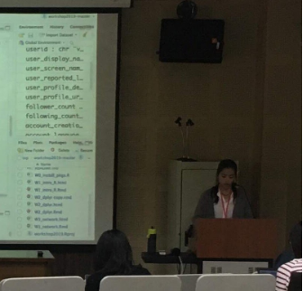
使用 R 進行探索式資料分析，協助無程式背景的參與者入門。
Lab Members
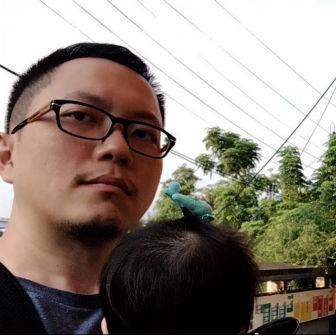
Associate Professor, Journalism, National Taiwan University
Ph.D. in Computer Science, National Chiao Tung University
Video storytelling · Thesis
Reporter, PTS · R & Python · Thesis
Python · Thesis: Constructiveness and Talk Show
R, Web · Thesis: Games for news
FTV News · Making news headlines
Python, LLM · Automated summarization of foreign news
Business Next · Python & R · Anthropomorphizing AI in news
Applied art, Gen-AI · Appearance anxiety
BBC 中文 · R · The image of youth in Taiwan
數位時代 · Python · The other in COVID-19
Yahoo! · Frontend · WebScroll + 360
CTBC Bank · Python · Time in news
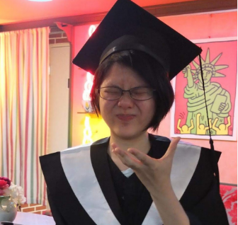
CNA · R · Fathering in parenthood
經理人 · R & web · User-generated content
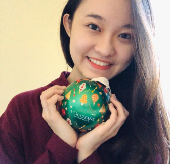
Hoffman · Multimedia stories about funeral directors
CommonWealth · Emotionally Handicapped
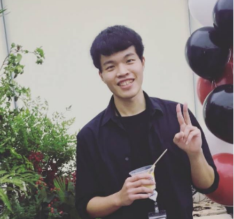
遠見 · R · Gender bias in fashion magazines
PTS · 3D, Blender · Immersive journalism
Web storytelling：胖子之大，何處可容身
Data journalist · Python & R · 上海報業
GoodNotes · R · Clickbaits of newspapers
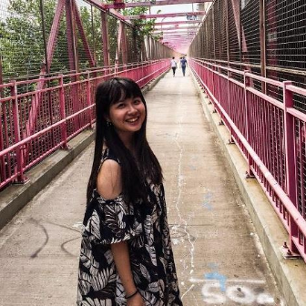
The Reporter · R · HPV vaccination news and opinions
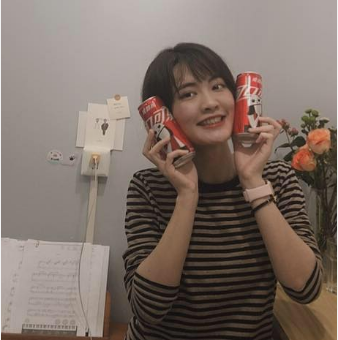
Alibaba · R, crawler, topic modeling · Weibo self-censorship
CommonWealth · VR · Modeling prisoners' space
foodpanda · R · E-sport players in Taiwan
Acer · Python, Django, crawler · Facebook demographics
Political Science + Economics · R + Python
Economics · R + Python · MOE UFO project
Interviewing, R · MOST VR project
R, data-driven reporting · CommonWealth project
Electrical Engineering · Python · Lifelogging
Political Science → Journalism · Reporting + R
Sociology · Python, database management
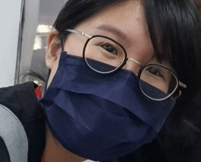
Journalism · RA
Research Projects
評估新聞標題如何影響讀者的媒體素養、公民意識與民主素養，並訪談編輯及記者，理解資訊科技如何改變新聞產製生命週期。
Stereotypes, bias, and collective memory across news and online media.
Public communication, international relations, and interaction networks on Twitter.
Computational approaches to online communities, opinion dynamics, and political polarization.
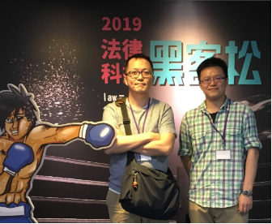
以新聞所與經濟系學生為對象設計程式設計教案、案例與課程，推廣社會科學學生的程式技能。
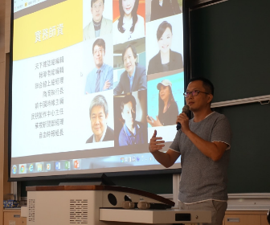
研究 VR 及 3D 技術如何應用於沉浸式新聞與數位敘事。
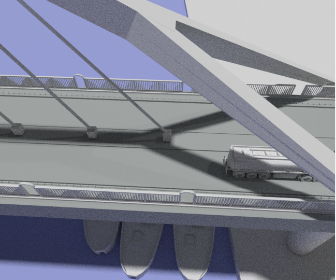
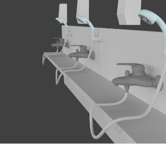
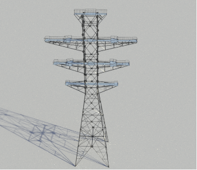
Publications & Courses
原 C.C.Lab 網站的 Publications 頁目前沒有刊載條目。程式設計課程網站可前往 Programming for Computational Social Science →